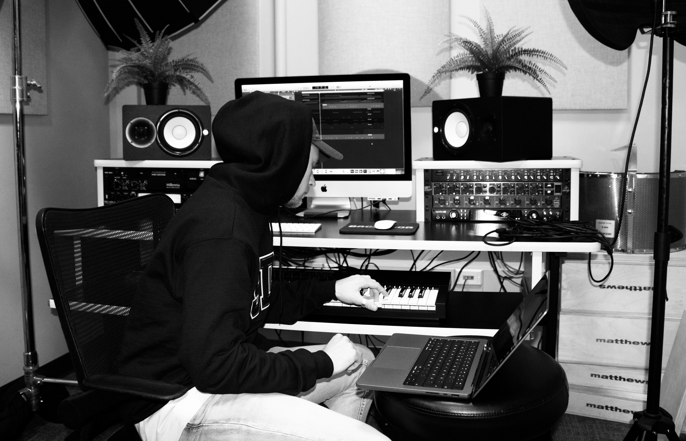

Projects
Web Application with Customer Focus
-
A project course where I, along with 28 course mates, developed the front-end for a web application
for Region Östergötland to help solve their problems with material handling.
-
Valuable to gain insight into all aspects of the development process through involvement in
everything from customer meetings and requirement specifications to design and development.
-
Inspiring to work in a motivated team towards a common goal of creating the best possible solution
for the customer.
-
The group was divided into departments and cross-functional teams, where my main role was a
developer.
-
For the application, we used React and TypeScript to create a scalable solution for both mobile and
desktop
using components and modules.
Digital Online Business – Music Production and Publishing
- I run an online store where I publish music for sale. I use digital platforms to market and sell to
artists who need instrumental tracks for their projects.
- Working with digital marketing through SEO, content creation and email marketing.
- Have designed and coded a responsive website for my brand.
- Have created contracts with customers and have had to make legal claims on my music.
- My music has been used on BBC One, which is a nice
acknowledgement of the effort and dedication put into it.

E-Commerce Application with a Focus on Navigability
- As part of my bachelor's thesis, I developed an e-commerce web application from scratch with a group of
seven people to investigate how navigability can be affected by different design decisions.
- Work was based on a market analysis, user testing, and user behavior data of the target audience to
iteratively develop and optimize navigability from the perspective of the target audience.
- I worked with both front-end and back-end and used Python, SQL, HTML, CSS, and JavaScript, together
with frameworks such as JQuery, Bootstrap and Flask.